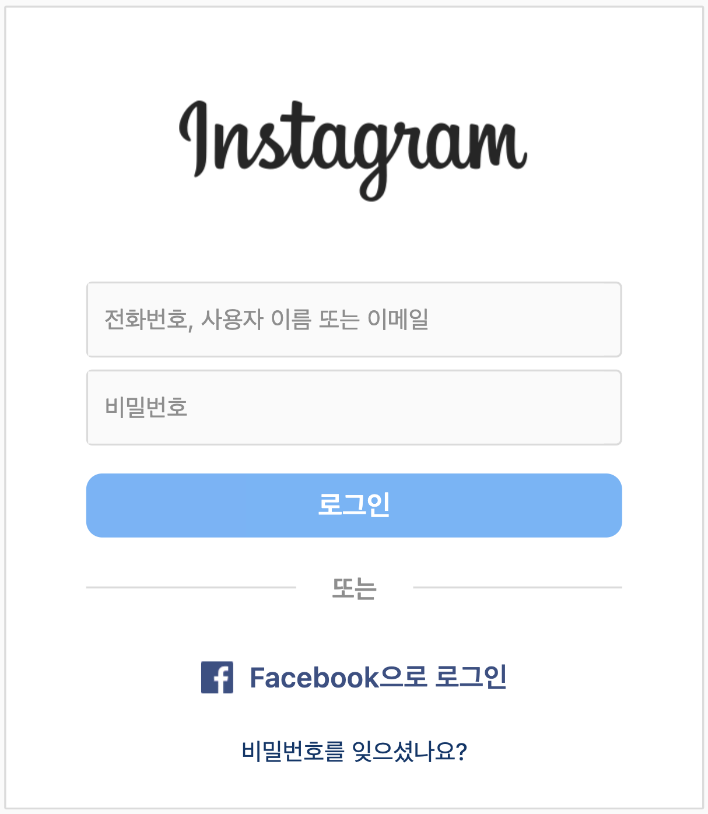
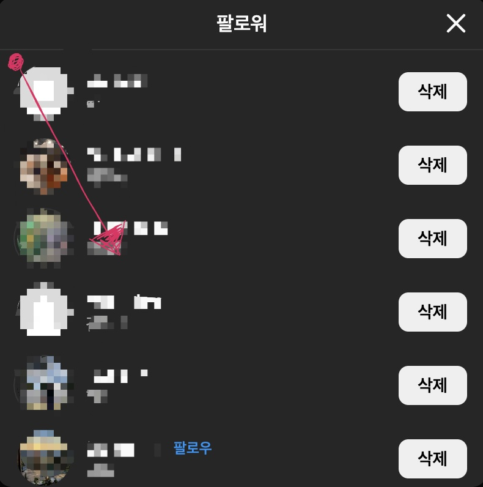
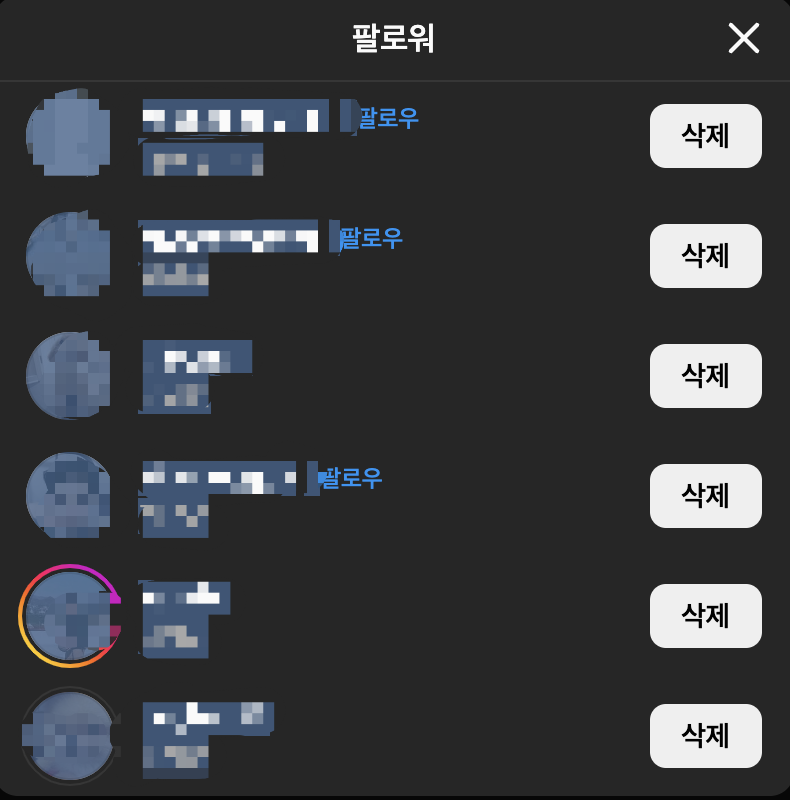
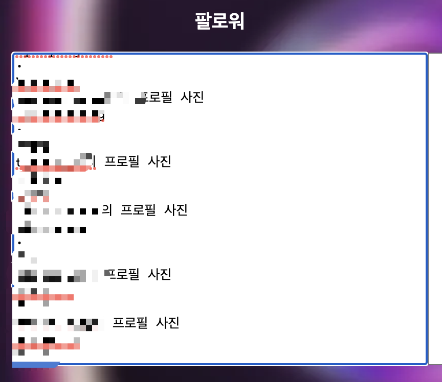

저희 웹사이트는 고유한 아이디로 회원을 구분합니다.
아이디를 잊지 말아주세요.
설정한 비밀번호는 암호화되어 저장됩니다.
관계 분석은 마지막 분석 시점과 비교하여 진행됩니다.

1. 인스타그램에 로그인합니다.
2. 자신의 프로필 탭으로 접속합니다.
3. 팔로워 및 팔로우 탭을 각각 사용합니다.

4. 빨간색 점 부분을 클릭하여 화살표 방향으로
드래그하여 모든 사용자에 범위 지정합니다.

5. 더 이상 로딩이 안될 때까지 드래그하여
다음 사진과 같이 파란색 영역을 설정합니다.

6. 인스타그램 분석기에 복사하여 붙여넣고,
팔로잉 탭도 동일하게 진행합니다.